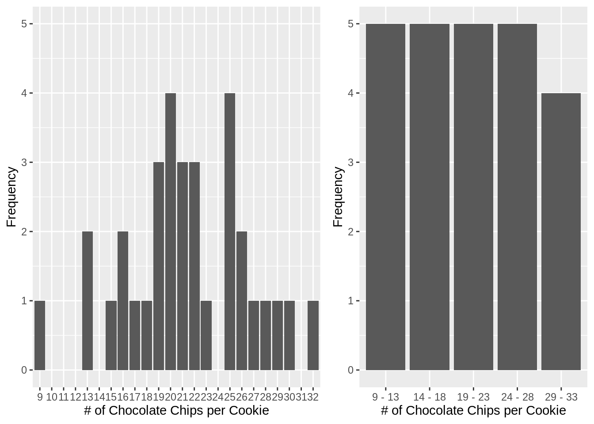

2.3 Grouped Frequency
When counting by every unit of measure is too granular, we can create grouped frequency distribution. To do this, we need to decide on how many groups (\(n_{classes}\)) and the width of the group (class width or interval, \(i\)) that we will combine the original scores to.
\[\begin{equation*} n_{class} = \frac{range(X)}{i} \end{equation*}\]
Some rules/guideline
- if \(\frac{range(X)}{i}\) is a decimal, round up and use that rounded up number as \(n_{class}\)
- \(i\) should be odd
- The lowest limit of new class (aka interval, stated or apparent limit) should be divisible by \(i\)
(TODO: reasoning for #2, #3)
If you are starting from number of classes, same formula applies
\[\begin{equation} i = \frac{range(X)}{n_{class}} \end{equation}\] \tag{2.1}
To compute grouped frequency:
- Start with range of limits for smallest class \((class_{\ i,\ LL}, class_{\ i,\ UL}) = (min(x_{LL}),\ min(x_{LL}) + i)\)
- Increment \(i\) until \(max(x_{UL})\): \((class_{i,\ LL}, class_{i,\ UL}) = (class_{\ i-1,\ UL},\ class_{\ i-1,\ UL} + i)\)
- Stop at \((class_{i,\ LL}, class_{i,\ UL}) = (class_{\ i-1,\ UL},\ max(x_{UL})\)
Example with 4 classes
Using nClasses as starting point using (2.1):
# number of classes
nClasses <- 5
# interval width, i
iWidth <- ceiling((max(x) - min(x) + 1) / nClasses)
class_LL <- seq(from = min(x) - chocochip_unit/2, to = max(x) - chocochip_unit/2, by = iWidth)
class_UL <- class_LL + iWidth
class_name = paste0(class_LL, " - ", class_UL)
# "8.5 - 13.5", # (min lower limit of x, .... )
# "13.5 - 18.5",
# "18.5 - 23.5",
# "23.5 - 28.5",
# "28.5 - 33.5" # (..., max upper limit of x)
# Pretty name of class name (without bounds)
# also in factor data type for plotting and grouping in R
chips_group = paste0(ceiling(class_LL), " - ", floor(class_UL))
df_freq_grouped <- tibble(x) %>%
rowwise() %>%
mutate(
# assumes correct (class_LL, class_UL)
which_group_index = which((x > class_LL & x < class_UL)),
`$(class_{LL} - class_{UL})$` = class_name[which_group_index],
`Chip Group (class)` = factor(chips_group[which_group_index], levels = chips_group)
) %>%
group_by(`$(class_{LL} - class_{UL})$`, `Chip Group (class)`) %>%
tally(name = "f") %>%
mutate(
cf = cumsum(f),
p = f / max(cf),
cp = cf / max(cf)
) %>%
arrange(desc(`Chip Group (class)`)) # display the table ordered, increasing from bottom to up| \((class_{LL} - class_{UL})\) | Chip Group (class) | f | cf | p | cp |
|---|---|---|---|---|---|
| 28.5 - 33.5 | 29 - 33 | 4 | 4 | 1 | 1 |
| 23.5 - 28.5 | 24 - 28 | 5 | 5 | 1 | 1 |
| 18.5 - 23.5 | 19 - 23 | 5 | 5 | 1 | 1 |
| 13.5 - 18.5 | 14 - 18 | 5 | 5 | 1 | 1 |
| 8.5 - 13.5 | 9 - 13 | 5 | 5 | 1 | 1 |
library(ggplot2)
ungrouped_freq_plot <- ggplot(df_freq) +
geom_bar(aes(x, f), stat = "identity") +
ylim(0, 5) +
xlab("# of Chocolate Chips per Cookie") +
ylab("Frequency")
grouped_freq_plot <- ggplot(df_freq_grouped) +
geom_bar(aes(`Chip Group (class)`, f), stat = "identity") +
ylim(0, 5) +
xlab("# of Chocolate Chips per Cookie") +
ylab("Frequency")
gridExtra::grid.arrange(ungrouped_freq_plot, grouped_freq_plot, widths=c(0.55, 0.45), ncol=2)